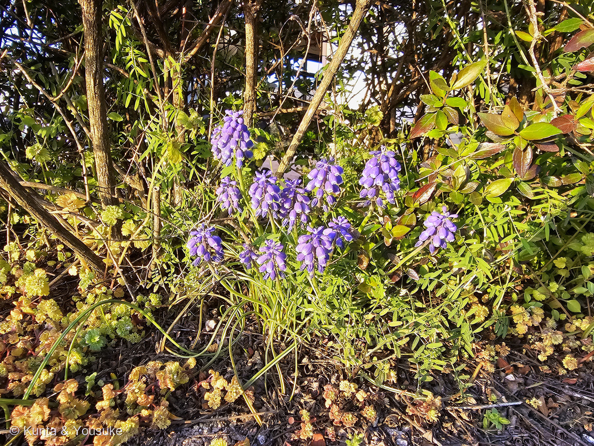
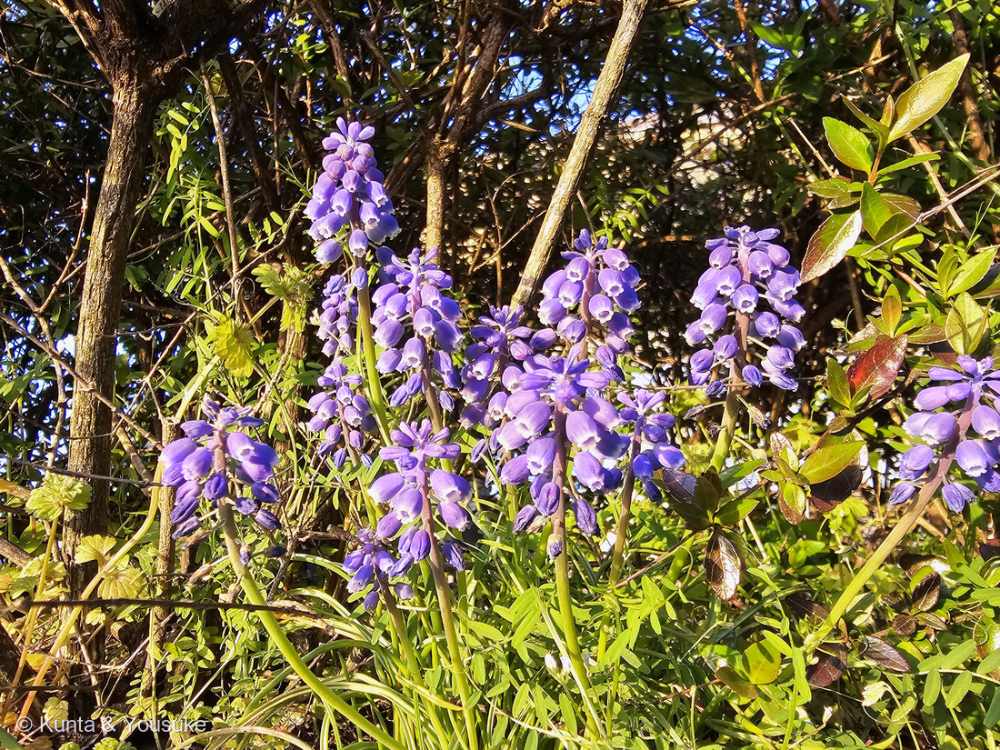
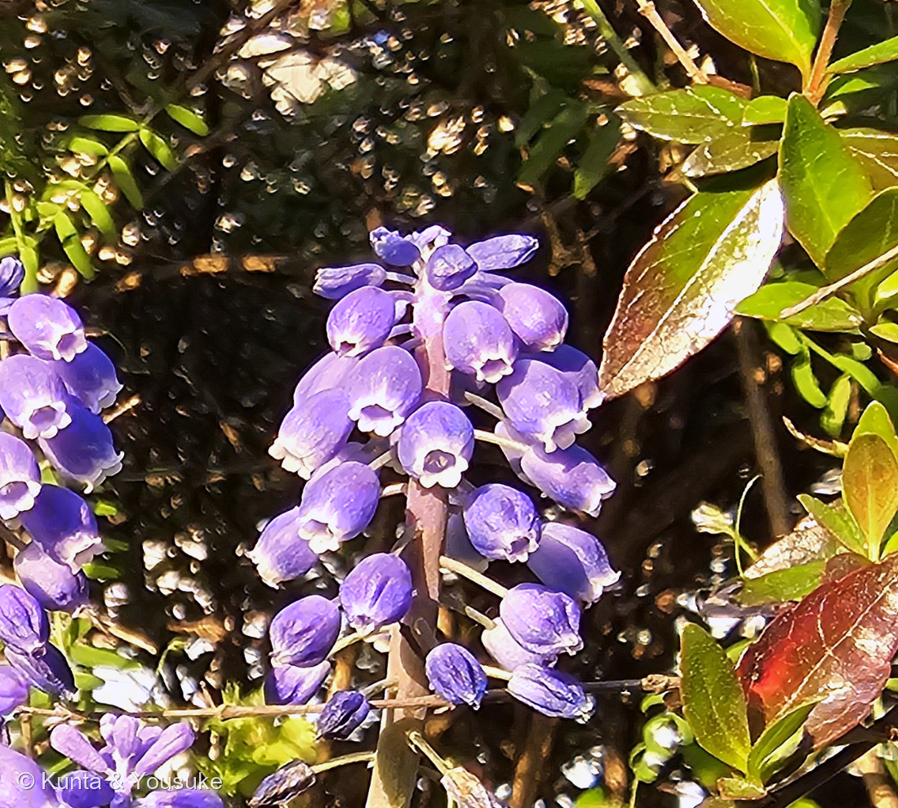
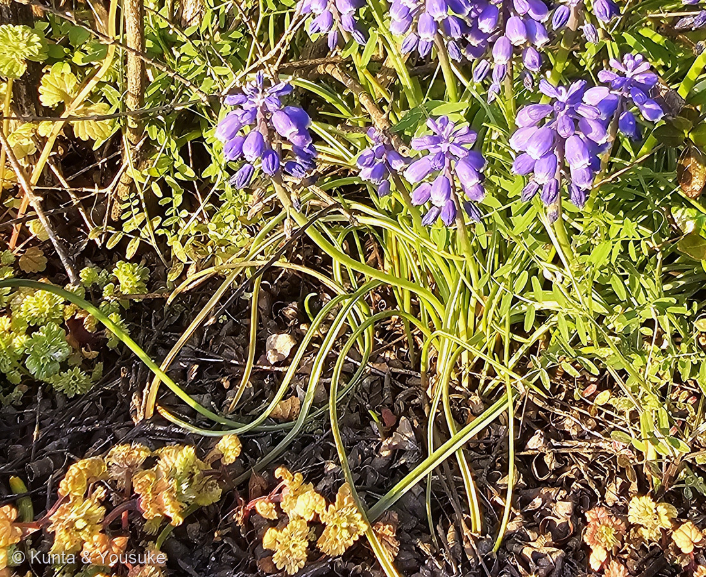

地図を読み込んでいるよ…
🔍 写真も地図も、押しているあいだ拡大して見られるよ（スマホは指を置いてすこし待ってね）。
🌍 の地図＝この子がもともと自生している場所を緑に。東地中海のギリシャからトルコ、コーカサス（アルメニアをふくむ）まで。林と草地に生える。ヨーロッパ南東部からイランまで、とする出典もある。日本では観賞用に植えられたものが道端に逸出して見られる。
⭐⭐ふるさとは東地中海だよ＝ギリシャとトルコから、黒海の向こうのコーカサス（アルメニア・ジョージア・アゼルバイジャン）までの、林や草地。⭐⭐⭐種小名の armeniacum は、この緑のなかのアルメニアのことだよ＝⚠でもアルメニアだけの子ではないので、名前と分布はちょっとずれている。⭐ブルガリアとイランも塗った＝「ヨーロッパ南東部〜イラン原産」とする出典もあるからだよ。⚠⚠日本は塗っていない＝観賞用に植えられたものが道端に逸出して見られるけれど、自生ではないから＝⭐燻太さんが会ったのも、港の植えこみの中だったよ。
⚠ 地図は国（日本と中国だけ県・省）までしか塗れないから、ほんとうの分布より広く見えていることがあるよ。地図はだいたいの場所。正確なところは、上の文を見てね。
ムスカリ
Muscari armeniacum H.J.Veitch
別名 グレープヒアシンス · ムスカリ・アルメニアカム · ブドウムスカリ 英名 grape hyacinth
キジカクシ科 · Asparagaceae（ツルボ亜科 Scilloideae · ムスカリ属 Muscari · キジカクシ目 Asparagales）── ⭐キジカクシ科は、この子を入れて図鑑に9人（008 アスパラガス・037 アスパラガス・スプレンゲリー・075 アマドコロ・130 スズラン・141 トックリラン・219 ハツミドリ・223 パイナップルリリー・288 フキアゲ）
燻太さんの言葉「肉厚の紫色の壺みたいな花が、下向きに鈴なりについているね。壺の縁は白くて、６つか７つに切れ込んでいる。この子は、昔はユリの仲間だった気がするけど他の子と一緒でキジカクシの仲間に分類されているのかな？」── ⭐⭐⭐切れ込みは6つだったよ。そして「昔はユリの仲間」も当たっていた
⭐⭐⭐⭐⭐ 名前と学名の由来 ── ムスク（麝香）と、ブドウの房
- ⭐⭐⭐属名 Muscari は、ムスク（麝香）から来ている。──英語版Wikipediaは「the Greek muschos, musk, referring to the scent（ギリシャ語の muschos＝ムスク。香りにちなむ）」と書いているよ。
- ⭐種小名 armeniacum は「アルメニアの」。──ふるさとの一部が、そのまま名前になった。⚠ただしアルメニアだけの子ではなくて、ギリシャやトルコからコーカサスまで広く生えているよ。
- ⭐⭐英名の grape hyacinth（グレープヒヤシンス）は、「the flowers resemble bunches of grapes（花がブドウの房のように見える）」から。──⭐別名の「グレープヒアシンス」「ブドウムスカリ」も、そこから来ているんだ。
- ⭐和名は「ムスカリ」＝学名をそのままカタカナにしたもの。──日本語の名前をもらう前に、園芸の名前で広まった子なんだね。
- ⏳⚠でも、ここでひとつ困ったことがある。──属名が「香り」からついているのに、英語版Wikipediaはこの種について「Some selections are fragrant（香るものもある）」としか書いていないんだ。⭐⭐つまり品種しだい。⭐だから、これは燻太さんに嗅いでもらうしかない（⚠ちぎらずに、顔を近づけるだけでね）。
⭐⭐⭐⭐⭐ 燻太さんの「昔はユリの仲間だった気がする」── そのとおりで、しかも駅が3つある
燻太さんは、こう書いてくれた。「この子は、昔はユリの仲間だった気がするけど他の子と一緒でキジカクシの仲間に分類されているのかな？」
- ⭐⭐⭐⭐⭐ぜんぶ当たっているよ。──英語版Wikipediaは、ムスカリ属について「was formerly placed in the Liliaceae as a member of the tribe Hyacintheae（かつてはユリ科のヒヤシンス連に置かれていた）」と書いている。
- ⭐⭐⭐しかもこの引っ越しには、途中の駅があるんだ。
- ①ユリ科（Liliaceae）── 古い分類。ヒヤシンス連の一員として。
- ②ヒヤシンス科（Hyacinthaceae）── ユリ科から切り出して、独立した科にしていた時期。
- ③キジカクシ科ツルボ亜科（Asparagaceae, Scilloideae）── いまの分類。②が丸ごと亜科に格下げされて、キジカクシ科の中に入った。
- ⭐⭐⭐⭐⭐そして、②の駅の記録が、いまも残っている。──学名のデータベース IPNI でこの子を引くと、科の欄がいまも「Hyacinthaceae」なんだ。⭐GBIFに集まっているデータのうちにも、科を Hyacinthaceae としているものがあるよ。
- ⭐⭐名前の履歴が、データベースの中に化石みたいに残っているんだね。⭐279 ナシで書いた「名前がむかしのまちがいの化石になっている」の、科のばんだよ。
- ⭐⭐⭐そして燻太さんの「他の子と一緒で」も、そのとおり。──図鑑には、同じ引っ越しをした子が何人もいるんだ。
- 075 アマドコロ＝「かつてはユリ科」。
- 130 スズラン＝「キジカクシ科（旧ユリ科）」。
- 223 パイナップルリリー＝⭐園の名札が「ユリ科（キジカクシ科）」と両方書いていた。
- 074 ニッコウキスゲ＝ユリ科からツルボラン科へ（行き先がちがう）。
- ⭐⭐274 ニラ＝「むかしはユリ科／そのあとネギ科／いまはヒガンバナ科」＝この子とまったく同じ、3つの駅。
- ⭐⭐この子で、図鑑のキジカクシ科は9人になったよ。──⭐そのうち223 パイナップルリリーとこの子だけが、同じツルボ亜科。図鑑の中でいちばん近い親戚だね。
- ⚠⚠まぎらわしいので、ひとつ注意。──「ツルボ亜科」（この子・キジカクシ科の中）と「ツルボラン科」（017 ハオルチア・074 ニッコウキスゲ）は、別のものだよ。⭐名前が似ているだけ。
⭐⭐ この植物のこと
- キジカクシ科ムスカリ属の、球根の多年草。⭐球根は直径2.5cm以下で、薄皮は褐色（灰色）。
- 葉は長さ30〜40cm×幅3〜8mm。⭐⭐そして「常に、花茎より長い」（出典）。⭐写真④の、地面まで垂れている細い葉がそれだよ。
- 花茎は約20〜30cm。⭐総状花序に、花を20〜40個、密につける。
- 花はつぼ形〜杯形で、長さ6〜7mm。濃紫青色〜サファイアブルー色。⭐そして「歯は白色」。
- ⭐穂の先には不稔花が2〜10個。明るい青色。──写真②の、穂の先のほうの色がうすい花たちだよ。
- 花期は3〜5月。⭐撮影は4月1日だから、まんなかごろだね。
- ⭐ヨーロッパの庭に現れたのは1871年。⭐英国王立園芸協会のガーデンメリット賞（AGM）をもらっていて、「robust and naturalises easily（丈夫で、よく増えて野生化する）」と書かれている（英語版Wikipedia）。
- ⚠日本でも「丈夫で、道端に逸出して見られる」。⭐この子は植えこみの中にいたけれど、いつか道ばたで会うこともあるかもしれないね。
⭐⭐⭐⭐ 同定について ── 決め手は「葉が花茎より長い」
- ⭐まず、属までは写真ですぐ決まる。──壺形の花が下向きに密な穂につき、口に白い歯がある。⭐これはムスカリ属の顔だよ。
- ⭐⭐⭐⭐⭐種を分けたのは、葉だった。──出典が挙げる見分けは、こう。
- この子（M. armeniacum）＝葉は「常に、花茎より長い」。
- M. botryoides＝この子より葉が短い。
- M. neglectum＝「葉はあまり長くならず、花茎と同長」。
- ⭐⭐写真④を見て。──細い葉が株もとから出て、大きく弧を描いて地面まで垂れている。花茎よりずっと長い。⭐この1枚で、ほかの2種が落ちるんだ。
- ⭐そのほか、合っているもの＝濃紫青色の壺形の花／口の歯が白い／穂の先に明るい青の不稔花／花期3〜5月に対して撮影は4月1日。
- ⚠⚠そして、学名の著者名で出典が割れていた。
- 三河の植物観察は「Muscari armeniacum Leichtlin ex Baker」。
- GBIF は「Muscari armeniacum H.J.Veitch」。
- ⭐⭐⭐IPNI（国際植物名索引）で引いたら、決着した。──H.J.Veitch のほうは The Garden 1: 687（1872年）で、POWO にも入っている。⚠Leichtlin ex Baker のほうは Gard. Chron. n.s. 9: 798（1878年）で、「nom. illeg. later homonym（あとから出た同じ名前なので、非合法名）」と書かれていた。
- ⭐6年早いほうが勝つ、ということだね。⭐だから図鑑では H.J.Veitch を採ったよ。⚠三河がまちがっているのではなくて、日本ではこちらの表記が広く使われているんだ。
- ⚠園芸品種名までは決めていない。──この子は品種がとても多くて、写真からは決められないよ（315・167と同じあつかい）。
⭐⭐⭐⭐⭐ 燻太さんの「6つか7つ」── 数えてみたら、6つだった
⭐⭐燻太さんは、こう書いてくれた。「肉厚の紫色の壺みたいな花が、下向きに鈴なりについているね。壺の縁は白くて、６つか７つに切れ込んでいる。」
- ⭐⭐⭐⭐⭐写真③を、いちばん大きくして数えてみたよ。──まんなかで、まっすぐ下を向いている花。その口のまわりに、白い小さな歯が輪になって並んでいる。⭐数えたら、6つだった。
- ⭐⭐⭐そして、その「切れ込み」の正体はこうだよ。──英語版Wikipediaは「six fused tepals forming a spherical to obovoid shape, constricted at the end to form a mouth around which the ends of the tepals show as small lobes or 'teeth'」と書いている。
- ⭐つまり6枚の花被片がくっついて壺になっている。
- ⭐壺の先がきゅっとすぼまって「口」になり、⭐⭐そこに6枚の花被片の先っぽが、小さな歯として顔を出している。
- ⭐だから6つ。⚠7に見えることがあるのは、手前の歯と向こうの歯が重なって見えるからだと思う（⭐これはぼくの読みだよ）。
- ⭐⭐⭐⭐⭐ここがいちばん面白いところ。──燻太さんは「切れ込んでいる」と書いたけれど、⭐英語版Wikipediaも三河の植物観察も、そこを「歯（teeth／歯）」と呼んでいるんだ。
- ⭐⭐見たままの言葉が、そのまま分類の言葉だった。──⭐262 ヘリコニアで覚えた形と、まったく同じだね。
⭐⭐⭐ 穂の先の、うすい色の花
- ⭐写真②の穂を、上から下へ目でたどってみて。──下のほうの花は濃い青紫で、しっかり壺の形。⭐でも先のほうの花は、色がうすくて、まだ細長い。
- ⭐⭐出典は、これを「不稔花」と呼んでいる。──「不稔花2〜10個、明るい青色」。⭐つまり実を結ばない花なんだ。
- ⚠⚠「なぜ実を結ばない花をつけるのか」は、ぼくが読めた出典に書いていなかった。──⭐目立たせるためかな、と思ったけれど、それはぼくの思いつきなので、書かないでおくね。
- ⏳⭐⭐確かめる手はある。──花が終わったころにもう一度見て、下の花にだけ実ができていれば、そのとおりだと分かるよ。
出典：学名（Leichtlin ex Baker 表記）・和名と別名グレープヒアシンス・ヨーロッパ南東部〜イラン原産・日本では帰化して道端に逸出・球根は直径2.5cm以下で薄皮は褐色（灰色）・葉は長さ30〜40cm×幅3〜8mmで常に花茎より長い・花茎は約20〜30cm・総状花序に花を20〜40個・花はつぼ形〜杯形で長さ6〜7mm・濃紫青色〜サファイアブルー色・歯は白色・不稔花2〜10個で明るい青色・花期3〜5月・M. botryoides は葉が短く M. neglectum は葉が花茎と同長で区別できることは三河の植物観察「ムスカリ」。属名 Muscari の由来（ギリシャ語 muschos＝ムスク・香りにちなむ）・英名 grape hyacinth の由来・6枚の花被片が合着して壺になり口のふちに小さな裂片（teeth）が並ぶこと・上下の花で色や形がちがうこと・かつてユリ科のヒヤシンス連に置かれていたこと・いまはキジカクシ科ツルボ亜科であること・属は約85種で旧世界（地中海沿岸・中南欧・北アフリカ・西/中央/南西アジア）原産は英語版Wikipedia "Muscari"。分布（ギリシャ・トルコからコーカサス、アルメニアをふくむ東地中海の林と草地）・種小名 armeniacum がアルメニアにちなむこと・香るものとそうでないものがあること・1871年にヨーロッパの庭に現れたこと・丈夫でよく野生化すること・RHS ガーデンメリット賞は英語版Wikipedia "Muscari armeniacum"。学名の有効性と科・目は GBIF の species/match API（Muscari armeniacum＝ACCEPTED／属 Muscari＝ACCEPTED／M. botryoides・M. neglectum＝ACCEPTED／Barnardia japonica＝ACCEPTED／Scilla scilloides＝SYNONYM／どれも Asparagaceae）。著者名の決着（H.J.Veitch＝The Garden 1: 687・1872・POWO 収録／Leichtlin ex Baker＝Gard. Chron. n.s. 9: 798・1878・nom. illeg. later homonym／どちらも科の欄は Hyacinthaceae のまま）はIPNI（国際植物名索引）。おまけのツルボ（Barnardia japonica・別名サンダイガサ・旧分類ではユリ科・日本全土から朝鮮/中国/台湾/ロシア・道端や土手の日当たりのよいところ・高さ20〜40cm・葉は4〜5枚で長さ15〜40cm×幅2〜9mm・花期8〜9月・総状花序にローズ紫色の花が下から咲く）は三河の植物観察「ツルボ」。⭐白い歯を6つ数えたこと、「7に見えるのは手前と向こうの歯が重なるから」という読み、そして「科の引っ越しには駅が3つあり、真ん中の駅がデータベースに残っている」という整理は、ぼくの観察とぼくの読みだよ。